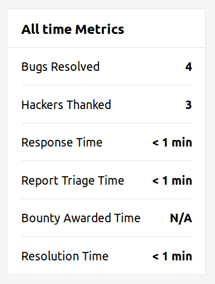
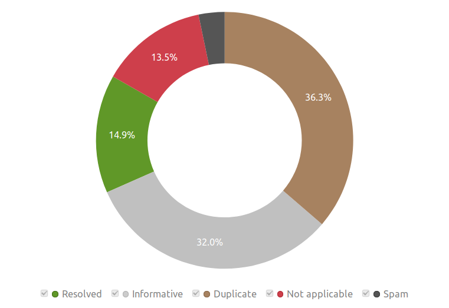

Before you even start accepting your first reports, let's run through some simple points that need to be considered before launching a bug bounty program.
Your security maturity level will determine your capabilities and a lot of the options that you have when running a program. Bug bounty programs with a sophisticated security team of 50 employees will not operate in the same way as an open-source project with two maintainers. That being said, both examples will base a lot of their program design on the same principles, as we will see below.
Make sure to have an organised plan when launching your bug bounty program. Define clear guidelines for triaging, resolving issues, and make sure that your security policy covers everything described in "How do I write a good security policy?".
Repeat after me, track, triage, and fix. Have an external mechanism for allowing hunters to submit reports and an internal tracking system to escalate the reports to the corresponding team. Most bug bounty platforms cover this area and supply the program with dedicated tools for this process.
Since a lot of things in the bug bounty industry are based on trust, communication is key; not only internally, but externally too. Set up a clear means of communication internally in order to help working together, and set up a security@ or bbp@ address, for bug bounty hunters to contact you if they have questions concerning your bug bounty program. Include the address in your security policy. If you use an address other than security@ as defined in RFC2142, remind hunters only to only use that address to ask questions, and not to report security issues.
Keep track not only of your platform's security with monitoring tools and scanners, but also store your bug bounty program's metrics in a well-organised overview page.
If you have a significant number of duplicates, this can mean many things — such as that you are taking too long to resolve the issue, or that you are accepting too many "low-hanging fruit" bugs. Learn to spot patterns and apply changes accordingly to improve your overall metrics.
Rewarding researchers for their findings and being proactive will keep hunters motivated. At the end of the day, the best program understands that they must work together with the researcher and not against them. Bug bounties should be a joint effort. Refer to "How do I determine the bounty amount?" to get started with setting up your bounty amounts.
To get a better idea of your maturity level, HackerOne has a survey which will assess the criteria described above and then plot the results on to a graph.
Take the surveyBug bounty programs can operate on a platform, or the company may decide to run everything on their own. The advantages of using a platform include the functionality, tools, assistance, and community of hackers that they provide. Hunters also tend to have a preference for platform-based programs [citation needed], because of the safe-harbours that the platforms can provide. Platforms will standardise — and more often than not — simplify the process of submitting and triaging reports. Please refer to "What platform should I use?" for a list of bug bounty platforms.
Another thing one must consider is whether to run a public bug bounty program or a private one. A public program allows anyone to participate and report issues. A private one, on the other hand, generally requires the company to invite the hunters in order for them report anything. The following table highlights the pros and cons of the two program types.
| Type | 👍 Pros | 👎 Cons |
|---|---|---|
| Public |
|
|
| Private |
|
|
There is also the possibility to start out with a private program in order to get a feel for what to expect, and then launch a public program when you feel ready. Some programs, so-called hybrid programs combine both, and invite hunters that report valid issues on their public program to a private version of the program that has a greater attack surface.